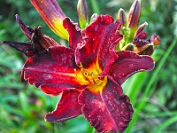
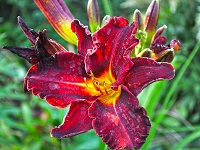
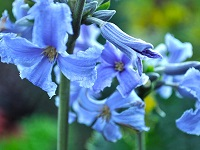
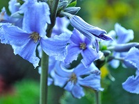

Byliny możemy pogrupować na ozdobne z liści i z kwiatów a także na te które rosną w pełnym słońcu na glebach jałowych, półcieniu lub zupełnie cieniolubne i rosnące w terenie podmokłym. Coraz większym zainteresowaniem cieszą się trawy ozdobne, które uprawiane są ze względu na ich charakterystyczny pokrój, różnorodność kształtów jak i różną fakturę liści i kwiatostanów. Byliny są roślinami tworzącymi najniższą warstwę naszych ogrodów. Wieloletnie kompozycje oszczędzają nasz czas i zachwycają różnorodnością form i kształtów. Bogaty wybór bylin zadowoli zarówno wielbicieli najprostszych upraw jak i koneserów poszukujących bardziej unikalnych odmian. Niepodważalnym atutem tych roślin jest długi okres kwitnienia. Umiejętnie dobrany zestaw roślin może cieszyć nasze oko od wczesnej wiosny do późnej jesieni. Z roku na rok wprowadzamy do naszej produkcji większy asortyment bylin, w tym sezonie możemy zaproponować duży wybór żurawek, liliowców i funki.
Oferujemy państwu:
 


 
